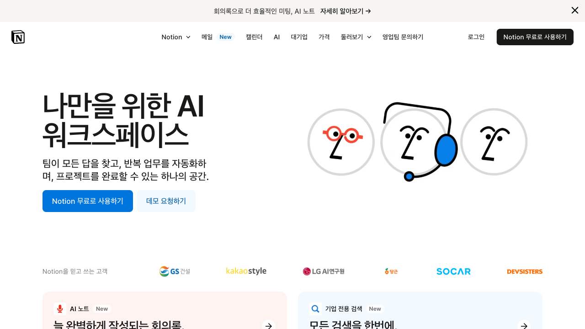

Notion 완전 정복: 일상 속 문제 해결부터 시작하는 스마트 워크스페이스 구축
2강: Notion 설치 및 첫 워크스페이스 만들기 (가장 쉬운 시작)
강의 목표: 이번 강의에서는 Notion을 설치하고 첫 워크스페이스를 만드는 과정을 단계별로 배웁니다. 웹 버전과 데스크톱 앱, 모바일 앱 모두를 다루며, 어떤 환경에서든 Notion을 시작할 수 있도록 도와드립니다.
2.1. Notion 계정 생성하기 (웹에서 시작)
Notion을 사용하기 위해서는 먼저 계정을 만들어야 합니다. 가장 간단한 방법은 웹 브라우저에서 바로 시작하는 것입니다.
- Notion 공식 웹사이트 접속:
- 웹 브라우저에서
www.notion.so에 접속합니다.
- 메인 페이지에서 "Get started for free" 또는 "무료로 시작하기" 버튼을 클릭합니다.
스크린샷 가이드: Notion 웹사이트 메인 페이지
- 목적: Notion 공식 웹사이트에서 회원가입을 시작하는 모습을 보여줍니다.
- 가이드: notion.so 메인 페이지의 "Get started for free" 버튼이 잘 보이도록 캡처합니다.
- 이미지 파일명:
2-1_notion_website.png

- 계정 생성 방법 선택:
- 이메일로 가입: 이메일 주소와 비밀번호를 입력하여 가입합니다.
- Google 계정으로 가입: 기존 Google 계정을 연동하여 빠르게 가입할 수 있습니다.
- Apple 계정으로 가입: Apple ID를 사용하여 가입할 수 있습니다.
추천:
Google 계정 연동을 추천합니다. 비밀번호를 따로 기억할 필요가 없고, 다른 기기에서도 쉽게 로그인할 수 있습니다.
스크린샷 가이드: 계정 생성 화면
- 목적: 계정 생성 옵션들(이메일, Google, Apple)을 보여줍니다.
- 가이드: 회원가입 페이지에서 이메일 입력 필드와 Google, Apple 로그인 버튼이 보이는 화면을 캡처합니다.
- 이미지 파일명:
2-2_signup_options.png

2.2. 첫 워크스페이스 설정하기
계정 생성이 완료되면 Notion이 여러분의 첫 '워크스페이스'를 설정하도록 도와줍니다. 워크스페이스는 여러분의 모든 페이지와 데이터베이스가 담기는 큰 폴더라고 생각하시면 됩니다.
- 워크스페이스 이름 설정:
- Notion이 워크스페이스 이름을 묻습니다. 개인 사용이라면 "내 워크스페이스" 또는 본인 이름을 입력하면 됩니다.
- 팀이나 회사에서 사용한다면 팀명을 입력합니다.
스크린샷 가이드: 워크스페이스 이름 설정
- 목적: 첫 워크스페이스 이름을 입력하는 화면을 보여줍니다.
- 가이드: 워크스페이스 이름 입력 필드와 "개인용" 선택 옵션이 보이는 화면을 캡처합니다.
- 이미지 파일명:
2-3_workspace_setup.png

- 사용 목적 선택:
- Notion이 사용 목적을 묻습니다: "개인용", "팀용", "회사용" 등
- 개인적인 메모와 일정 관리가 목적이라면 "개인용"을 선택합니다.
- 템플릿 선택 (선택사항):
- Notion이 몇 가지 시작 템플릿을 제안할 수 있습니다.
- 처음이라면 "빈 페이지에서 시작" 또는 "개인 메모" 템플릿을 선택하는 것을 추천합니다.
스크린샷 가이드: 첫 워크스페이스 대시보드
- 목적: 워크스페이스 설정 완료 후 첫 화면을 보여줍니다.
- 가이드: 깔끔한 상태의 Notion 워크스페이스 메인 화면을 캡처합니다. 왼쪽 사이드바와 메인 영역이 잘 보이도록 합니다.
- 이미지 파일명:
2-4_first_workspace.png

2.3. 데스크톱 앱 설치하기 (Windows/macOS)
웹 브라우저에서도 Notion을 사용할 수 있지만, 더 빠르고 편리한 사용을 위해 데스크톱 앱을 설치하는 것을 강력히 추천합니다.
- 데스크톱 앱 다운로드:
- Notion 웹사이트에서 상단 메뉴의 "Desktop app" 또는 "데스크톱 앱"을 클릭합니다.
- 또는
www.notion.so/desktop에 직접 접속합니다.
- 운영체제에 맞는 버전을 선택합니다:
- Windows: "Download for Windows" 클릭
- macOS: "Download for Mac" 클릭
스크린샷 가이드: 데스크톱 앱 다운로드 페이지
- 목적: Notion 데스크톱 앱 다운로드 페이지를 보여줍니다.
- 가이드: notion.so/desktop 페이지에서 Windows/Mac 다운로드 버튼이 보이는 화면을 캡처합니다.
- 이미지 파일명:
2-5_desktop_download.png

- 앱 설치 및 로그인:
- 다운로드된 설치 파일을 실행하여 앱을 설치합니다.
- 설치 완료 후 앱을 실행하고, 앞서 만든 계정으로 로그인합니다.
- 웹에서 작업한 모든 내용이 자동으로 동기화되어 나타납니다.
동기화란? 웹, 데스크톱, 모바일 등 어떤 기기에서 Notion을 사용하든, 모든 변경사항이 실시간으로 다른 기기에도 반영되는 것을 말합니다.
2.4. 모바일 앱 설치하기 (iOS/Android)
언제 어디서나 Notion을 사용하려면 스마트폰에도 앱을 설치해 두는 것이 좋습니다.
- 앱스토어에서 다운로드:
- iOS (iPhone/iPad): App Store에서 "Notion"을 검색하여 설치
- Android: Google Play 스토어에서 "Notion"을 검색하여 설치
스크린샷 가이드: 모바일 앱스토어에서 Notion 검색
- 목적: 앱스토어에서 Notion 앱을 찾는 모습을 보여줍니다.
- 가이드: App Store나 Play 스토어에서 "Notion" 검색 결과 화면을 캡처합니다.
- 이미지 파일명:
2-6_mobile_app_store.png

- 모바일 앱 로그인 및 확인:
- 앱 설치 후 같은 계정으로 로그인합니다.
- 데스크톱에서 만든 워크스페이스와 페이지들이 모바일에서도 동일하게 보이는지 확인합니다.
2.5. 기본 인터페이스 둘러보기
이제 Notion의 기본 화면 구성을 알아봅시다. 어떤 기기에서든 기본 구조는 비슷합니다.
- 사이드바 (왼쪽):
- 워크스페이스 이름: 현재 작업 중인 워크스페이스
- 페이지 목록: 만든 모든 페이지들이 나타남
- + 새 페이지: 새로운 페이지를 만드는 버튼
- 메인 영역 (가운데):
- 현재 선택된 페이지의 내용이 표시되는 곳
- 처음에는 비어있거나 환영 메시지가 표시됩니다.
- 상단 바:
스크린샷 가이드: Notion 기본 인터페이스 설명
- 목적: Notion의 기본 화면 구성 요소들을 설명합니다.
- 가이드: 사이드바, 메인 영역, 상단 바가 잘 보이는 Notion 화면을 캡처하고, 각 영역에 설명을 추가합니다.
- 이미지 파일명:
2-7_interface_overview.png

2.6. 첫 페이지 만들어보기 (간단한 테스트)
설치와 설정이 완료되었으니, 첫 페이지를 만들어 Notion이 제대로 동작하는지 확인해 봅시다.
- 새 페이지 생성:
- 사이드바 하단의 "+ 새 페이지" 또는 "New page" 버튼을 클릭합니다.
- 간단한 내용 입력:
- 페이지 제목: "Notion 시작하기"
- 본문에 간단한 텍스트: "안녕하세요! 이것은 나의 첫 Notion 페이지입니다."
- 동기화 확인:
- 웹 브라우저에서 작업했다면 데스크톱 앱에서도 같은 내용이 보이는지 확인
- 모바일 앱에서도 동일한 페이지가 나타나는지 확인
축하합니다!
모든 기기에서 같은 내용이 보인다면 Notion 설치와 설정이 완벽하게 완료된 것입니다. 이제 본격적으로 Notion을 활용할 준비가 되었습니다.
강의 요약:
이번 2강에서는 Notion 계정 생성부터 웹, 데스크톱, 모바일 앱 설치까지 모든 설정 과정을 완료했습니다. 또한 기본 인터페이스를 살펴보고 첫 페이지를 만들어 동기화가 제대로 되는지 확인했습니다. 이제 어떤 기기에서든 Notion을 자유롭게 사용할 수 있습니다.
다음 강의 예고:
3강: Notion으로 나만의 '메모장' 만들기 (기본 텍스트, 이미지, 체크리스트)
- Notion의 기본 단위인 '페이지' 이해하기
- 블록 시스템 소개 및 기본 텍스트 블록 활용
- 이미지 블록으로 시각적인 메모 만들기
- 체크리스트 블록으로 간단한 할 일 관리하기